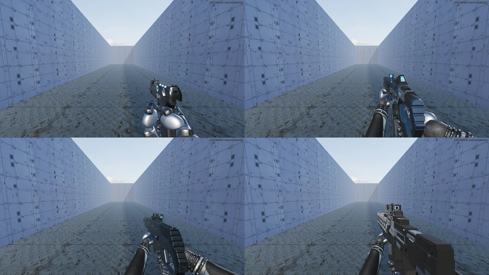

Devlog · our FPS
Когда AI пообещал «готово за пару часов»

Devlog: Битва за мизинец
В последних коммитах мы пытались провести масштабный рефакторинг анимаций для нашего FPS. Наша цель — упростить разработку и унифицировать все виды оружия, используя одну и ту же базовую пару роботизированных рук. Казалось бы, идеальный план для оптимизации ресурсов.
Мы доверили процесс нашим AI-агентам, надеясь на их невероятную скорость. В теории, автоматизированный солвер должен был мгновенно адаптировать позы под разные модели оружия. AI уверенно заявлял, что задача будет решена и всё будет готово к продакшену за считанные часы.
Однако на практике мы столкнулись с классическим «fail_lesson». Как видно на контактном листе (четыре ракурса первого лица в сером текстурированном коридоре), система почти справилась. Основная проблема возникла с анатомией: при попытке подогнать позу под разные пушки, мизинец перестал корректно следовать за движением руки. Наш автоматический инструмент справился со всеми суставами, кроме одного — мизинец просто перестал существовать в нужных кадрах.
Сейчас мы работаем над тем, чтобы вернуть пальцу его функциональность и завершить унификацию без потерь в геометрии. Работаем дальше! 🛠️
Written with AI assistance. The pictures are real screenshots of the game in development.